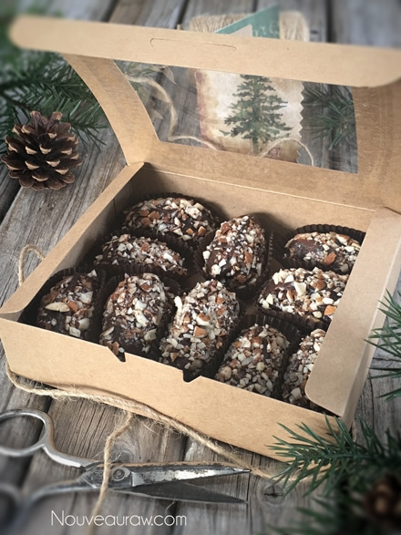

Salted “Caramel” Ganache Truffles

~ raw, vegan, gluten-free ~
Who doesn’t just love the sound of a Salted “Caramel” Ganache Truffle? This recipe is the kind of stuff that keeps you up at night. You know what I am talking about… you toss and turn, you try to punch your pillow into place, you throw the top quilt off, you pull it on, you toss it off, you pull it on… you are just laying there…
You can’t understand why you can’t fall asleep. You’re exhausted, you couldn’t wait to lay down all day. You get up and peek through the drawn blinds to see if it is a full moon because it was, that would explain it — no full moon.
Then it hits you… those darn truffles! The are in the kitchen waiting, patiently… all snuggled in a box just waiting for you. Darn those truffles! You stomp back to bed, pull the covers up over your head in haste, and with conviction… “I am going to SLEEP!” A few sheep pass by, and you smile inwardly… you have avoided temptation and won the game.
Soon you find your husband shaking you awake. “Wake up, wake up… you’re having a nightmare. You were screaming, “truffle truffle truffle.” It’s ok honey, go back to sleep. I ate them all so they will no longer tempt you!” They say that what consumes your mind, controls your life. Are you really going to let a little, itty, bitty truffle own you!? hehe
They are delicious and straightforward to make. You need large, moist Medjool dates which give that caramel flavor. Then nestled inside is a deep rich ganache. You then paint the truffle by dipping your finger into the ganache and give the outside of the date a thin coating. From there, you roll it in a dusting of crushed almonds. Perfection at its best. It’s a messy job, BUT somebody has to do it.
Do I have any volunteers?! I would love to hear from you. Blessings, amie sue
Yields roughly 50 truffles
- 3/4 cup raw dark agave syrup or maple syrup
- 3/4 cup raw cacao powder
- 1/3 cup raw cold-pressed coconut oil, melted
- 1/8 tsp Himalayan pink salt
- 50 large Medjool dates, pitted
- 1/2 cup almonds, crushed
- Coarse salt for topping
Preparation:
- With a sharp knife, make a slit on one side of the date and remove the pit. Set aside.
- In a high-powered blender, combine the sweetener, cacao powder, coconut oil, and salt. Process until smooth.
- Scoop the ganache into a piping bag fitted with a round piping tip.
- Holding a date in your hand, pinch it open slightly. Place the piping tip inside of the date and gently squeeze. Be careful that you don’t overfill the date. You want to be able to close the date without ganache seeping out.
- With your fingers, paint the outside of the date with a thin layer of ganache then roll into almonds.
- Sprinkle the top with coarse sea salt and place the truffle in a small cupcake liner and package.
- These will keep on the countertop in a sealed container for 5-7 days, maybe even longer. You can freeze them for 1-3 months. They won’t freeze solid, so this is my preferred way of preserving them.